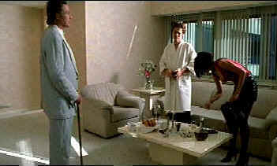

|
New Rose Hotel/C-,C+ |
|
Sterling/1998/93m/WS 1.85 |
A baffling tale of industrial espionage carried on the coattails of a couple Indie actors, Christopher Walken and Willem Dafoe. Together with Asia Argento, they for the trio of players in a plot to lure a biotech genius from one corporation to another.
 |
The original film is shot with a quirky style, lots of video images and dark, muddy sets. It doesn't bode well for a video transfer and unfortunately, the DVD cannot leap over the high wall of impenetrable image set up by the original material
Audio commentary featuring writer Chris Zois is an added incentive to

Click on the DVD MIA symbol for
profiles of DVDs missing in action.
Add films to the DVD MIA Master List by filling out
a simple form. Click Here

A heist delivered in simple strokes and sudden fury. Harvey Keitel
is relentless.


Agoraquest is
offering reviews, forums, news, and more dedicated to Sony products
including, televisions, cameras, audio, DVD, and more.

Glenn Erickson's insightful DVD reviews have been a Internet fixture for several
years. Check out some of his sophisticated feature articles. Currently hosted by
DVD Talk.

Selections from the Feature Archive include articles on
Akira Kurosawa, Blonde Bimbos,
Frank
Darabont, Steven Culp,
John
Herzfeld or Vietnam: The
Hollywood Pariah, and many more....
Hitchcock
on DVD

Information and review links to Alfred Hitchcock on DVD